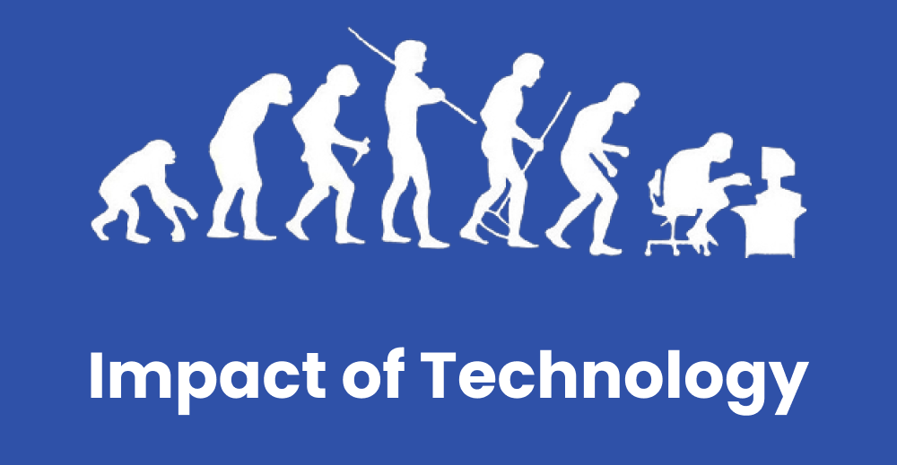

Impact of Technology.
Impact of Technology on society
Technology can readily be defined as scientific knowledge applied to the practical difficulties that we face in today's environment. There is no doubting that technology has a massive impact on the world today, which can be divided into two categories: how it affects our society today and how it influences corporate activities and operations. Without a doubt, technology has an impact on society. In reality, we are all aware of this effect in our daily lives. It has an impact on the economy, our culture, modernized agriulture, and our level of living. It is crucial to remember, however, that the benefits are a two-edged sword, with some being negative and others being positive.
Positive impact of technology
Technology has an impact on our day-to-day existence. The environment is so full with technology that we often take it for granted and don't realize how much of an influence it has on us until we don't have access to a phone, transportation, water, or energy. Our living standards have risen dramatically as a result of technological advancements. Despite the fact that we are currently facing very high inflation rates and very high unemployment rates, people are generally eating better, dressing better, and overall living more comfortable lives.
All essential parts of our societies, including laws and how they are enforced, language, art, health care, mobility, education, and religion, are all impacted by technology. For example, great technological advancements in health care have allowed doctors to treat their patients in a virtual environment through the use of mediums such as video conferencing. At the current time, COVID-19 the deadly virus has become a pandemic for the world. With the help of technology we are atleast safe for some percentage. Doctors are working hard to save patients, there's technology they can save many lives. The virus's vaccines are developing with the help of technology. I am creating a website with the help of technology. There's technology in everywhere. It's lockdown now and all activities are conducting through online platform with interet. Everyboy is following work from home method through online platforms. We can access any part of the world virtually. The world is in the finegtip because of computers, smartphones, and internet. We cannot imagine our life without technology. Suppose if there's no technology in the world then, there will be disbalance in the world. Technology has become a part of our life.
Negative impact of technology
Creative destruction occurs as a result of every technological breakthrough. There wil be very bad consequences. Therefore, technology also has negative effects. If someone's unintentionally used technology then it results bad consequences. For example: Nuclear bombs are first used for breaking down rocks, hills for civilization. But now that nuclear bombs, weapons are used for wars which results huge impact in human lives, property. Internet is the most important things which also results bad results if used unintentionally. Hacking, phising, viruses, malwares attacks are commmon in internet because it's internet and anything could happen. Different violet scenes in movies, TV shows, internet can expose someone's mind and it could build up bad behaviours.
Conclusion
Despite the fact that there are a variety of ways in which technology has a negative affect on our society, for the most part, it has substantially aided in making our lives better. Technology has immensely aided us in becoming more productive by allowing us to become more efficient. It has also enabled us to save a significant amount of time and money, both of which are significant advantages that should not be overlooked. It has also been successful in promoting global togetherness by transforming the world into a global village, which has aided people in more easily overcoming cultural, racial, and geographical obstacles.